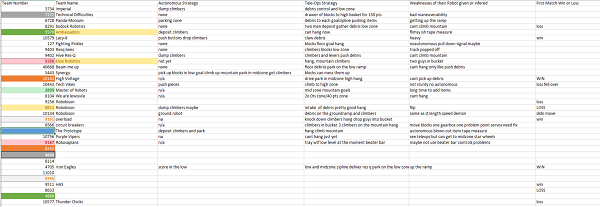
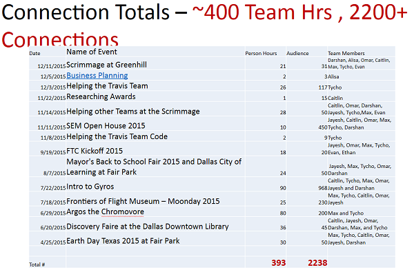

Due to the team taking a bus with Imperial Robotics, we arrived to the competition a little late. However, due to an organizer running late, the competition itself was delayed, so we weren't significantly affected. Like last time, we had trouble finding a power outlet that we could set up our battery box near, but it turned out there were a couple nearby. We were once again set up right next to Imperial, so we helped each other out while getting ready for the announcement of the match schedule.
The judges seemed to have been quite impressed at our presentation, and asked us quite a few questions about our engineering process, something we made sure to highlight. Unbeknownst to us, this would later win us the qualifier's Think award.
We kept using our scouting strategies this tournament, and kept multiple spreadsheets.

Dylan and Alisa walked around interviewing teams and watching their matches to log strengths and weaknesses. The spreadsheets they created helped us think about strategies for matches and to decide who to look for possible alliance partners during the finals. Due to multiple mistakes, we ended up 32nd place out of 32! Our failures consisted mostly of connection issues with the phone and mechanical power distribution issues with our cliffhanger servo. Getting our robot working at the end of our regular matches, we impressed many visiting teams with our climbing efficiency. Using a video of our robot's capabilities, Dylan and Alisa convinced the first seed team to select us for their alliance.
Even before the games, we were nearly disqualified twice due to our robot barely fitting in the sizing box and our beater bars being called an "entanglement hazard."
First Game: We got stuck on blocks our very first match. Then, when we got to the mountain, we didn't have enough time to try to make it to the top. Our servo got caught on something and was somewhat damaged.
Second Game: Our robot lost connection as soon as we started driving.
Third Game: Our servos continually twitched, so we tried to do a power cycle, but the judges had never asked if we were ready or not and dumped the debris, so we couldn't touch the robot by that time.
Fourth Game: We got there late and the judges did not allow us to touch our controller.
Fifth Game: We got teamed up with Imperial. We actually won that one by climbing the mountain while Imperial cleared the debris.
In the alliance matches, we were partnered with The Fighting Pickles and Synergy.
Semi-final Game 1: We got to the mid zone and our alliance parter got to the cliff. Synergy also placed a bunch of blocks in the mountain mid goal.
Semi Final Game 2: We were switched out for the Pickles this game. Synergy got into the high zone and the Pickles hung off the mountain, giving us a blowout win. So overall, we got 3 wins in the tournament.
In our final matches, we experienced much the same result, except for our robot getting into the high zone in our game. Pickles and Synergy wrapped up game 2, giving us first place alliance.
We got the Think award for our engineering process slides, a third place Inspire award for our outreach, mostly for this slide

and a #1 Alliance award. Without the first place alliance, the team would've still qualified through our Think award and Inspire nomination. Even with our last place finish in the regular matches, we showed resiliancy and ended up as one of the top teams headed into the UTA regionals.